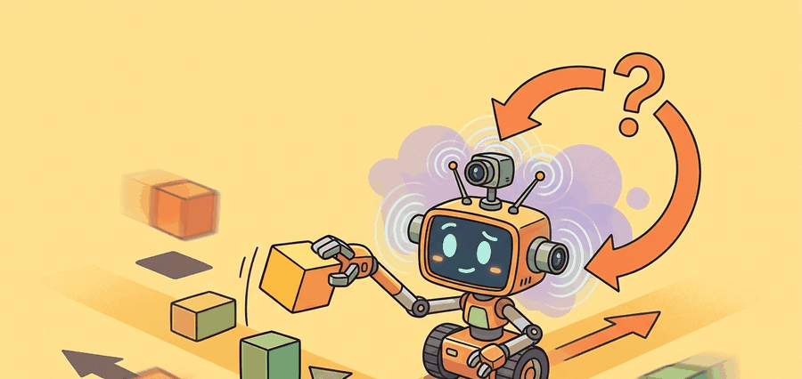

"A robot dataset is not a pile of videos. It is a memory of what the body was allowed to try."
A Data-Hungry Manipulator

This section assumes familiarity with supervised imitation objectives introduced in section 21.2. The coverage and split concepts developed here are extended in section 23.6 (dataset formatting with LeRobot) and section 24.1 (scaling laws across large multi-embodiment collections). Distribution shift, which is the central failure mode when coverage is insufficient, is analyzed formally in section 25.2.
A language model trained overnight on a trillion tokens takes seconds to produce its next version. A robot manipulation policy trained on the same wall-clock budget may gain only a few hundred new demonstrations: every extra trajectory requires a human operator, a physical reset, a working arm, and time. That gap is why data, not compute, is the binding constraint in embodied AI right now. Here you will see exactly where the bottleneck lives, why naive trajectory counts hide the real problem, and how to measure coverage so that the data you collect actually prepares the robot for the conditions it will face.
Why Physical Data Does Not Scale Like Text
A demonstration trajectory is a time-indexed sequence $\tau = (o_0, a_0, r_0, o_1, a_1, \ldots, o_T)$. For imitation learning, the central supervised object is usually $(o_t, a_t)$, but the engineering object is larger: camera frames, robot state, commanded action, executed action, timestamps, calibration, operator identity, task description, reset condition, and outcome. Each episode is not just a file; it is a physical experiment that cost a human reset, and that cost is why robot datasets grow orders of magnitude slower than text corpora.
The bottleneck appears because useful coverage grows in a product space. If a task varies over objects $O$, poses $P$, backgrounds $B$, robot states $S$, and operators $H$, the coverage target is not $|O| + |P| + |B| + |S| + |H|$. The naive grid is closer to $|O||P||B||S||H|$, and the real world adds correlations and long-tail cases. Five objects, three poses, two backgrounds, two robot states, and two operators already require 120 cells: adding a fourth pose triples the grid while adding only one item to a list. This is why a thousand beautiful clips from one kitchen may still fail in a second kitchen.
The useful unit of robot data is not a trajectory count by itself. The useful unit is coverage of the variables that change the action a competent policy should choose.
For a dataset $D$, write each episode as $e_i = (x_i, u_i, y_i)$, where $x_i$ is the episode context, $u_i$ is the time-series trajectory, and $y_i$ is the outcome and labels. A split is valid only if the held-out set changes at least one context variable that deployment will actually change.
Use LeRobotDataset or RLDS-style episode containers after the coverage variables are named. The library handles video indexing, frame access, and metadata storage, but it cannot decide which deployment variables your validation split should hold out.
A Simple Coverage Metric
The following fragment computes a small coverage table from episode metadata. It is deliberately small: before building a foundation model, the team should be able to explain which objects, rooms, operators, and failure modes the data actually covers.
# Estimate metadata coverage for a small robot demonstration table.
# The point is to count deployment-relevant factors before model training.
episodes = [
{"object": "mug", "room": "lab", "operator": "a", "result": "success"},
{"object": "mug", "room": "kitchen", "operator": "b", "result": "slip"},
{"object": "bowl", "room": "lab", "operator": "a", "result": "success"},
]
fields = ["object", "room", "operator", "result"]
coverage = {field: len({episode[field] for episode in episodes}) for field in fields}
grid_upper_bound = 1
for value in coverage.values():
grid_upper_bound *= value
print(coverage)
print("observed episodes:", len(episodes))
print("factor-grid upper bound:", grid_upper_bound)When auditing an existing dataset with LeRobot, run lerobot.check_dataset with the --episodes flag before any training step: it reports missing camera streams, timestamp gaps larger than one frame period, and episodes where the recorded action length does not match the observation length. Catching a 50 ms timestamp drift at this stage costs seconds; catching it after a week of training costs you the whole run. If your recording stack does not emit hardware-synchronized timestamps, add a software sync-pulse column to every episode at collection time and validate that column first.
The expected output should make the reader slightly suspicious: three episodes touch four distinct metadata fields, yet the simple factor grid already contains 16 possible combinations. The correct response is not to collect every grid cell blindly. It is to decide which factors are deployment-critical, then design train, validation, and stress splits that test those factors deliberately. The same logic governs distribution shift problems that arise when a policy trained offline is evaluated in new conditions.
Three demonstrations covering a 16-cell grid is like tasting three squares of a 4x4 chocolate bar and declaring you understand the whole bar. You do understand the bar, just not any of the squares you have not tried yet, which is precisely the part the robot will encounter on Tuesday.
Algorithm: Coverage-First Demonstration Collection
Input: Task description $\mathcal{T}$, deployment factor set $\mathcal{F} = \{f_1, f_2, \ldots, f_k\}$, episode budget $N$, operator pool $H$, desired split fractions $(\alpha_\text{train}, \alpha_\text{val}, \alpha_\text{stress})$
Output: Annotated dataset $D = \{e_i\}_{i=1}^{N}$ with coverage table $C$, valid train/val/stress splits, and policy checkpoint $\pi_\theta$
- Write the task contract: specify objects, success criterion, reset rule, forbidden shortcuts, and stop condition for $\mathcal{T}$.
- Enumerate deployment factors $\mathcal{F}$; compute the factor-grid upper bound $G = \prod_{j=1}^{k} |f_j|$ to expose the combinatorial coverage target before any data is collected.
- Select the teleoperation interface (kinesthetic, joystick, leader-follower, VR, handheld gripper, or shared autonomy $\pi_\theta + \text{human}$) based on task contact requirements and operator $h \in H$ ergonomics.
- For each episode $e_i$: record synchronized streams $(o_t, a_t, s_t, \tau_t)$ at fixed frequency, where $o_t$ is observation, $a_t \in \mathbb{R}^d$ is commanded action, $s_t$ is robot state, and $\tau_t$ is hardware timestamp.
- At collection time, label each episode with context metadata $(f_1^{(i)}, \ldots, f_k^{(i)})$, outcome $y_i \in \{\text{success, slip, abort, intervention}\}$, and operator id $h_i$; do not defer labeling.
- After every $\lfloor N/5 \rfloor$ episodes, recompute the coverage table $C[f_j] = |\{e_i : f_j^{(i)}\}|$ and compare observed coverage against $G$; redirect collection toward under-represented factor combinations.
- Include near-miss and recovery episodes explicitly: for contact-rich tasks, failed attempts supply supervision for the boundary of competence that clean expert rollouts cannot provide.
- Freeze splits before any $\theta$ update: assign episodes to train ($\alpha_\text{train} \cdot N$), validation ($\alpha_\text{val} \cdot N$), and stress ($\alpha_\text{stress} \cdot N$) such that the validation and stress sets each change at least one deployment-critical factor $f_j$ relative to train.
- Verify data integrity with
lerobot.check_dataset: confirm no missing camera streams, no timestamp gaps $\Delta\tau > T_\text{frame}$, and no action-length mismatches before training. - Train policy $\pi_\theta$ via imitation objective $\theta^* = \arg\min_\theta \sum_{(o_t, a_t) \in D_\text{train}} \mathcal{L}(\pi_\theta(o_t), a_t)$; evaluate on validation and stress splits separately to distinguish in-distribution accuracy from coverage generalization.
Practical Collection Protocol
- Write the task contract: objects, success state, reset rule (including whether a Franka Panda or UR5 requires a scripted home-pose recovery or a human repositioning the object), forbidden shortcuts, and stop condition measured against a specific sensor reading rather than a vague description.
- Choose the interface based on the contact physics the task requires: kinesthetic teaching on a Franka Panda is natural for smooth reaching but degrades for forceful insertion tasks because the operator fights the arm's gravity compensation; a leader-follower system such as ALOHA preserves bimanual timing at the cost of a matched hardware setup; a handheld gripper (UMI-style) trades proprioceptive fidelity for portability when in-the-wild diversity matters more than precision.
- Record synchronized streams at matched rates: RGB cameras typically run at 30 Hz while joint encoders and force-torque sensors update at 500-1000 Hz; every episode must carry a hardware timestamp column, and any gap larger than one camera frame period (33 ms at 30 Hz) must be flagged rather than interpolated, because a policy trained on interpolated contact forces will hallucinate smooth transitions that do not exist at execution time.
- Label failure modes at collection time using a fixed vocabulary (slip, missed-grasp, timeout, operator-abort, collision) attached to the episode metadata, not weeks later when the physical context is gone and the replayed video no longer shows the tactile cue that caused the failure.
- Freeze train, validation, held-out task, and stress splits before any policy checkpoint is written: the validation split must change at least one deployment-critical factor (lighting angle, object pose range, or camera mount position) relative to train, otherwise it measures memorization rather than generalization.
| Bottleneck | Why It Hurts Learning | Mitigation |
|---|---|---|
| Reset cost | Rare failures are under-sampled because each reset consumes human time. | Scripted resets, fixture design, and explicit stress episodes. |
| Operator bias | The policy learns one person's preferred path rather than the task manifold. | Multiple operators, instruction randomization, and operator metadata. |
| Timing drift | Observation and action streams no longer describe the same instant. | Hardware timestamps, sync pulses, and dropped-frame labels. |
| Missing negatives | The learner sees successes but not the boundary of unsafe or ineffective behavior. | Intervention labels, failed attempts, and recovery demonstrations. |
If the dataset contains only smooth expert rollouts, the policy may never learn recovery. For contact-rich tasks, near-misses, slips, aborts, and human interventions are not embarrassing leftovers; they are supervision for the boundary of competence.
Consider a specific case: a manipulation policy trained on 200 cup-grasping demonstrations, all collected in one lab with two operators and a fixed overhead light. At deployment in a cafeteria with a side-mounted camera and a third operator, the policy fails on 60% of grasps despite 100% training accuracy. The cause is not the model size or the algorithm; it is that lighting angle and camera position were held constant in every training episode, so the policy learned a representation tied to those conditions. Adding even 20 episodes with varied lighting during training reduces cafeteria failure to under 15% in reported ablations from the BridgeData V2 collection study. The episode count did not change; the coverage did.
A team collecting dishwasher-loading demonstrations should not ask only how many episodes they have. They should ask how many rack layouts, plate sizes, lighting states, gripper approaches, human operators, and recovery cases appear in each split.
Open X-Embodiment, DROID, BridgeData V2, UMI, Mobile ALOHA, and LeRobot all attack the same bottleneck from different angles: shared data formats, cheaper collection hardware, broader scene diversity, and reusable policy training stacks. The frontier question is how to predict which additional episode is worth collecting next.
For one robot task you care about, list five deployment variables and mark which ones your current dataset actually covers. If the validation split does not change any of them, it is probably a comfort split rather than a generalization test.
Robot data is bottlenecked by physical coverage, not by storage. A strong collection plan names the deployment factors before it celebrates the episode count.
Design a metadata sheet for 50 demonstrations of a contact-rich task. Include at least four context variables, two failure labels, and one held-out split rule.
What's Next
Section 23.2 studies leader-follower systems such as ALOHA and GELLO, which reduce the cost of collecting precise, repeatable, high-quality demonstrations.
Zhao, T. Z. et al. (2023). Learning Fine-Grained Bimanual Manipulation with Low-Cost Hardware.
Introduces ALOHA and ACT, making the connection between low-cost bimanual teleoperation, action chunking, and real-world manipulation data explicit.
A kinematically matched leader device study that directly compares teleoperation ergonomics and reliability against other low-cost interfaces.
Defines the handheld gripper approach, latency matching, and relative-trajectory action interface used in portable demonstration collection.
Cheng, X. et al. (2024). Open-TeleVision: Teleoperation with Immersive Active Visual Feedback.
A current reference for immersive visual feedback, active perception, and VR-style operator embodiment in data collection.
Hugging Face LeRobot Documentation.
Documents dataset conversion, policy training, and robot-control utilities that turn teleoperation logs into reusable learning artifacts.